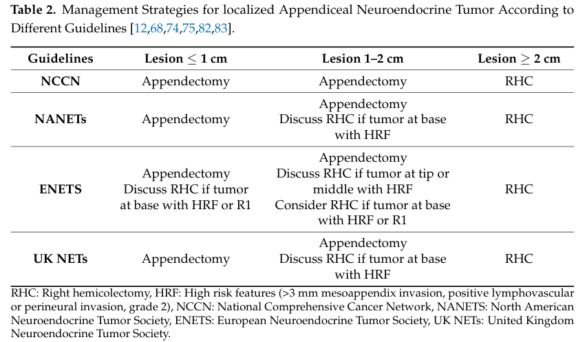

Appendiceal Neuroendocrine Tumor (aNET/ANET) — Disease Characteristics Research Report
Target Disease
- Disease Name: Appendiceal Neuroendocrine Tumor (appendiceal neuroendocrine neoplasm)
- MONDO ID: Not identified from the retrieved sources in this run (see “Key identifiers” below).
- Category: Gastrointestinal neuroendocrine neoplasm (appendix primary).
Executive summary (current understanding)
Appendiceal neuroendocrine neoplasms (ANENs) are uncommon tumors of the appendix, most often sporadic, non-functioning, well-differentiated NETs (G1–G2) that are incidentally discovered in appendectomy specimens obtained for suspected appendicitis. Management is primarily surgical, with appendectomy adequate for most tumors <1 cm and right hemicolectomy (RHC) generally recommended for tumors ≥2 cm; however, the benefit of completion RHC for 1–2 cm tumors has been challenged by a large Europe-wide pooled cohort study showing no survival advantage and no metachronous metastases after complete resection. (andrini2023anupdateon pages 1-3, mohamed2022managementofappendix pages 1-2, nesti2023hemicolectomyversusappendectomy pages 5-12)
Table (click to expand)
| Topic | Key finding (with numbers) | Source (author/year/journal) | URL/DOI | Evidence type |
|---|---|---|---|---|
| Definition / classification | Appendiceal neuroendocrine neoplasms include well-differentiated NETs (formerly “carcinoid tumors”), poorly differentiated NECs, and MiNENs; ~70–75% are well-differentiated NETs graded G1–G3 by Ki-67 and/or mitotic index. (mohamed2022managementofappendix pages 1-2, mohamed2022managementofappendix pages 2-4) | Mohamed et al., 2022, Cancers | https://doi.org/10.3390/cancers15010295 | Review/guideline synthesis |
| Epidemiology / incidence | aNET annual incidence reported at ~0.15–0.6 per 100,000; peak age 38–51 years; female predominance ~2:1; found in ~3–5 per 1,000 appendectomies; most arise at the appendix tip (~70%). (andrini2023anupdateon pages 1-3) | Andrini et al., 2023, Current Treatment Options in Oncology | https://doi.org/10.1007/s11864-023-01093-0 | Review |
| Epidemiology / incidence trends | In SEER 2000–2017, appendiceal NET incidence increased from 0.03 to 0.90 per 100,000 person-years, with the largest increase in localized disease; survival also improved over time. (wang2023incidencetrendsand pages 13-14) | Wang et al., 2023, PLOS ONE | https://doi.org/10.1371/journal.pone.0294153 | Population-based registry study |
| Stage at diagnosis | SEER (1973–2004) distribution: 60% localized, 28% regional, 12% distant at presentation. (mohamed2022managementofappendix pages 1-2) | Mohamed et al., 2022, Cancers | https://doi.org/10.3390/cancers15010295 | Review of registry data |
| Nodal metastasis by size | Reported nodal metastasis rates rise with size: ~2.5% for <1 cm, 31% for 1–2 cm, and 64% for ≥2 cm. (andrini2023anupdateon pages 1-3) | Andrini et al., 2023, Current Treatment Options in Oncology | https://doi.org/10.1007/s11864-023-01093-0 | Review |
| Nodal metastasis by size (alternative dataset) | SEER analyses summarized rates of 15% (<1 cm), 47% (1.0–1.9 cm), and 86% (>2 cm); another series reported 31% for 1.1–2 cm and 64% for >2 cm. (mohamed2022managementofappendix pages 4-5) | Mohamed et al., 2022, Cancers | https://doi.org/10.3390/cancers15010295 | Review of registry studies |
| Distant metastasis / carcinoid syndrome | Carcinoid syndrome is very rare (<1%) and generally occurs only with metastases. (andrini2023anupdateon pages 1-3) | Andrini et al., 2023, Current Treatment Options in Oncology | https://doi.org/10.1007/s11864-023-01093-0 | Review |
| Surgery threshold: appendectomy | Consensus summarized by guidelines supports appendectomy for tumors <1 cm, and for 1.0–1.9 cm tumors without high-risk features. (mohamed2022managementofappendix pages 4-5) | Mohamed et al., 2022, Cancers | https://doi.org/10.3390/cancers15010295 | Review/guideline synthesis |
| Surgery threshold: right hemicolectomy | Most guidelines recommend right hemicolectomy for tumors >2 cm; high-risk features include deep mesoappendiceal invasion >3 mm, positive/unclear margins, lymphovascular invasion, and higher proliferative rate. (mohamed2022managementofappendix pages 4-5) | Mohamed et al., 2022, Cancers | https://doi.org/10.3390/cancers15010295 | Review/guideline synthesis |
| Intermediate tumors (1–2 cm) | Authors suggest considering right hemicolectomy when tumor size is >15 mm and/or G2 and/or lymphovascular invasion, ideally after multidisciplinary review. (andrini2023anupdateon pages 1-3, andrini2023anupdateon pages 7-9) | Andrini et al., 2023, Current Treatment Options in Oncology | https://doi.org/10.1007/s11864-023-01093-0 | Expert review/opinion |
| Hemicolectomy vs appendectomy outcomes (1–2 cm) | Europe-wide pooled cohort of 278 patients: 163 appendectomy vs 115 hemicolectomy; median follow-up 13.0 years; regional nodal metastases in 22/115 (19.6%); estimated occult nodal disease after appendectomy 12.8% (95% CI 6.5–21.1%); no new metastases during >10 years follow-up; adjusted OS HR 0.88 (95% CI 0.36–2.17; p=0.71), supporting no routine hemicolectomy after complete appendectomy for 1–2 cm aNETs. (nesti2023hemicolectomyversusappendectomy pages 16-21, nesti2023hemicolectomyversusappendectomy pages 5-12, nesti2023hemicolectomyversusappendectomy pages 30-36) | Nesti et al., 2023, The Lancet Oncology | https://doi.org/10.1016/S1470-2045(22)00750-1 | Multicenter pooled retrospective cohort |
| Recent metastasis study | In an institutional series of 124 appendiceal NETs, only 10 had stage IV disease; 8/10 were synchronous, and among 114 early-stage patients none developed distant metastases during follow-up; authors concluded surveillance after resection is unlikely to help and tumors <2 cm should not receive completion hemicolectomy. (altoubah2025doappendicealneuroendocrine pages 1-2, altoubah2025doappendicealneuroendocrine pages 2-3, altoubah2025doappendicealneuroendocrine pages 3-4) | Al-Toubah et al., 2025, JNCCN | https://doi.org/10.6004/jnccn.2024.7069 | Institutional retrospective cohort |
| Recent completion-surgery study | Single-center cohort of 82 patients: lymph-node metastases in 7/82 (8.5%), distant metastases in 3/82 (3.6%); 27/82 (33%) underwent completion hemicolectomy, but only 6/27 (22%) had nodal metastases and none had distant metastases, implying overtreatment in 21/27 (75%); tumor size >2 cm was the only significant predictor of nodal metastasis. (wachter2025retrospectiveanalysisof pages 1-2, wachter2025retrospectiveanalysisof pages 2-4) | Wächter et al., 2025, Langenbeck's Archives of Surgery | https://doi.org/10.1007/s00423-024-03603-6 | Single-center retrospective cohort |
| Imaging recommendations | For NETs >2 cm, incomplete resection, or positive nodes/margins, recommend contrast-enhanced triple-phase CT or MRI; somatostatin-receptor PET with Ga-68 or Cu-64 DOTATATE is preferred and considered the diagnostic/surveillance gold standard for SSTR-positive disease. (mohamed2022managementofappendix pages 4-5) | Mohamed et al., 2022, Cancers | https://doi.org/10.3390/cancers15010295 | Review/guideline synthesis |
| Imaging in high-grade disease | Poorly differentiated/high-grade NECs are better evaluated with 18F-FDG PET plus CT/MRI rather than SSTR-based imaging. (mohamed2022managementofappendix pages 4-5) | Mohamed et al., 2022, Cancers | https://doi.org/10.3390/cancers15010295 | Review/guideline synthesis |
| Biomarkers | Chromogranin A may be elevated but is nonspecific; 5-HIAA (plasma or 24-h urine) is mainly useful in serotonin-producing tumors with carcinoid features or liver metastases. (mohamed2022managementofappendix pages 2-4, mohamed2022managementofappendix pages 4-5) | Mohamed et al., 2022, Cancers | https://doi.org/10.3390/cancers15010295 | Review/guideline synthesis |
| Survival / prognosis | Localized well-differentiated NETs have median OS >20 years; NCDB 5-year survival for ANETs was 86.3% (95% CI 81.4–89.9); 5-year survival by size was 89.9% (≤2 cm), 70.6% (2–4 cm), and 58.2% (>4 cm). (mohamed2022managementofappendix pages 2-4) | Mohamed et al., 2022, Cancers | https://doi.org/10.3390/cancers15010295 | Review of registry data |
| Follow-up / surveillance | Most well-differentiated appendiceal NETs <2 cm with negative margins and mesoappendiceal invasion <3 mm have low recurrence risk and often need no surveillance; postoperative surveillance is unlikely to benefit resected small tumors in recent retrospective data. (mohamed2022managementofappendix pages 4-5, altoubah2025doappendicealneuroendocrine pages 1-2, altoubah2025doappendicealneuroendocrine pages 3-4) | Mohamed et al., 2022, Cancers; Al-Toubah et al., 2025, JNCCN | https://doi.org/10.3390/cancers15010295; https://doi.org/10.6004/jnccn.2024.7069 | Review/guideline synthesis; retrospective cohort |
Table: This table compiles key evidence-backed facts about appendiceal neuroendocrine tumors/neoplasms from the retrieved literature, emphasizing incidence, metastatic risk by tumor size, management thresholds, diagnostics, and recent outcome studies. It is designed as a compact reference for evidence-supported knowledge base population.
1. Disease information
What is the disease?
- Definition / scope: Appendiceal neuroendocrine neoplasms include well-differentiated neuroendocrine tumors (NETs; historically called “carcinoid tumors”), poorly differentiated neuroendocrine carcinomas (NECs), and mixed neuroendocrine–non-neuroendocrine neoplasms (MiNENs) arising in the appendix. (mohamed2022managementofappendix pages 1-2, mohamed2022managementofappendix pages 2-4)
- Most appendiceal NENs are well-differentiated NETs; a 2022 guideline-synthesis review states ~70–75% are well-differentiated NETs. (mohamed2022managementofappendix pages 1-2)
Key identifiers (OMIM, Orphanet, ICD-10/ICD-11, MeSH, MONDO)
- Not recovered from the retrieved documents in this run (no ICD/MeSH/MONDO/Orphanet codes were present in accessible excerpts). (mohamed2022managementofappendix pages 1-2)
Synonyms / alternative names
- Appendiceal neuroendocrine tumor (aNET/ANET)
- Appendiceal neuroendocrine neoplasm (ANEN)
- Appendiceal carcinoid tumor (legacy term for well-differentiated appendiceal NET) (mohamed2022managementofappendix pages 1-2)
Evidence provenance
- The synthesized disease understanding here is derived primarily from aggregated disease-level resources (reviews, guideline syntheses, registry-based cohort studies) plus large pooled/retrospective clinical cohorts. (mohamed2022managementofappendix pages 4-5, nesti2023hemicolectomyversusappendectomy pages 5-12, wachter2025retrospectiveanalysisof pages 1-2)
2. Etiology
Disease causal factors
- ANENs are described as “usually sporadic tumors” in a guideline-synthesis review. (mohamed2022managementofappendix pages 1-2)
Risk factors
- Evidence gap in retrieved sources: The retrieved texts emphasize sporadic presentation and incidental detection but do not provide well-supported, tumor-specific environmental or inherited risk factors for appendiceal NET. (mohamed2022managementofappendix pages 1-2)
Protective factors / gene–environment interactions
- Not identified in the retrieved evidence set. (mohamed2022managementofappendix pages 1-2)
3. Phenotypes (clinical presentation) + suggested HPO terms
Typical presentation
- Incidental diagnosis after appendectomy for suspected appendicitis is the dominant presentation pattern. (mohamed2022managementofappendix pages 1-2)
- Tumors are most often located at the distal tip of the appendix. (mohamed2022managementofappendix pages 1-2)
- Functional syndromes are rare: a 2023 review reports carcinoid syndrome is very rare (<1%), generally occurring only with metastases. (andrini2023anupdateon pages 1-3)
Phenotype characteristics (age of onset, severity, progression)
- Demographics from a 2023 review: peak age reported as ~38–51 years with female predominance (~2:1). (andrini2023anupdateon pages 1-3)
- Clinical course is typically indolent for localized well-differentiated tumors, consistent with high long-term survival in registry/retrospective datasets. (mohamed2022managementofappendix pages 2-4, nesti2023hemicolectomyversusappendectomy pages 5-12)
HPO term suggestions (non-exhaustive)
- Abdominal pain (HPO: Abdominal pain)
- Acute appendicitis-like presentation (HPO: Appendicitis or Abdominal pain with acute onset)
- Incidental finding (HPO: Incidental finding)
- If functional/metastatic:
- Carcinoid syndrome (HPO: Carcinoid syndrome)
- Diarrhea (HPO: Diarrhea)
- Flushing (HPO: Flushing)
Biomarker phenotype links (laboratory abnormalities)
- Chromogranin A may be elevated but is nonspecific (confounded by renal/hepatic disease and medications). (mohamed2022managementofappendix pages 2-4)
- 5-HIAA (plasma or 24-hour urine) is mainly useful when serotonin excess is suspected (carcinoid features or liver metastases). (mohamed2022managementofappendix pages 4-5, mohamed2022managementofappendix pages 2-4)
4. Genetic / molecular information
Causal genes / germline predisposition
- Not identified for appendiceal NET specifically in the retrieved sources. The main high-confidence statements available were that ANENs are typically sporadic. (mohamed2022managementofappendix pages 1-2)
Pathophysiology-linked molecular features (clinically used)
- Proliferation index (Ki-67) and mitotic rate are central to grading well-differentiated NETs and correlate with behavior. (mohamed2022managementofappendix pages 1-2, mohamed2022managementofappendix pages 2-4)
- Somatostatin receptor (SSTR) biology is clinically actionable: SSTR-targeted PET is described as preferred and a “gold standard” approach for SSTR-positive disease evaluation/surveillance in guideline syntheses. (mohamed2022managementofappendix pages 4-5)
Proposed ontology annotations
- Cell types (Cell Ontology; CL) — suggestions:
- Enteroendocrine cell (CL: enteroendocrine cell; as the relevant neuroendocrine lineage of the gut)
- GO biological process — suggestions (non-exhaustive):
- Regulation of cell proliferation
- Neuroendocrine differentiation
- Hormone secretion / regulated exocytosis
5. Environmental information
No appendiceal-NET-specific toxin, lifestyle, or infectious triggers were supported in the retrieved evidence set. (mohamed2022managementofappendix pages 1-2)
6. Mechanism / pathophysiology
Mechanistic chain (clinically grounded)
- Neuroendocrine neoplastic transformation in appendiceal neuroendocrine lineage cells results in a well-differentiated NET in most cases. (mohamed2022managementofappendix pages 1-2)
- Growth and invasion are typically limited in small tumors; however, increasing tumor size and adverse histopathologic features associate with higher probability of regional lymph node metastasis and (rarely) distant spread. (mohamed2022managementofappendix pages 4-5, wachter2025retrospectiveanalysisof pages 1-2)
- Systemic functional symptoms (carcinoid syndrome) are uncommon and generally reflect metastatic disease. (andrini2023anupdateon pages 1-3)
Key pathways and cellular processes
- The retrieved sources did not provide appendiceal-NET-specific pathway alterations (e.g., MAPK/PI3K driver mutations) with primary molecular evidence; thus, pathway-level claims are not made here. (mohamed2022managementofappendix pages 1-2)
7. Anatomical structures affected
Primary organ
- Appendix (UBERON suggestion: vermiform appendix).
Localization
- Most tumors arise at the appendiceal tip/distal appendix. (andrini2023anupdateon pages 1-3, mohamed2022managementofappendix pages 1-2)
Metastatic spread (when present)
- In a large institutional cohort (2008–2023), stage IV disease was rare and, among metastatic cases, common sites included peritoneum and liver, with ovarian involvement noted among females in metastatic subset. (altoubah2025doappendicealneuroendocrine pages 2-3)
8. Temporal development
Onset and course
- Often detected in young to middle-aged adults and diagnosed after acute presentation leading to appendectomy. (andrini2023anupdateon pages 1-3, mohamed2022managementofappendix pages 1-2)
Progression
- For completely resected 1–2 cm tumors, a Europe-wide pooled cohort with median 13 years follow-up reported no metachronous distant metastases and no tumor-related deaths. (nesti2023hemicolectomyversusappendectomy pages 5-12)
9. Inheritance and population
Epidemiology (recent data prioritized)
- Incidence trend (SEER 2000–2017): appendiceal NET incidence increased from 0.03 to 0.90 per 100,000 person-years, with the most pronounced increase in localized disease. (Wang et al., PLOS ONE, published Nov 2023; https://doi.org/10.1371/journal.pone.0294153) (wang2023incidencetrendsand pages 13-14)
- Reported incidence range: a 2023 review reports annual incidence ~0.15–0.6 per 100,000 and that aNETs are found in approximately 3–5 per 1,000 appendectomies. (Andrini et al., Current Treatment Options in Oncology, May 2023; https://doi.org/10.1007/s11864-023-01093-0) (andrini2023anupdateon pages 1-3)
- Stage distribution (historical SEER 1973–2004): 60% localized, 28% regional, 12% distant at diagnosis. (mohamed2022managementofappendix pages 1-2)
Inheritance
- No Mendelian inheritance pattern or specific causal genes were supported by the retrieved appendiceal-NET-focused evidence; tumors are generally described as sporadic. (mohamed2022managementofappendix pages 1-2)
10. Diagnostics
Histopathology / immunohistochemistry
- Diagnostic confirmation typically relies on postoperative pathology with neuroendocrine immunophenotype markers (e.g., synaptophysin, chromogranin A variably, CD56) and Ki-67 assessment for grading. (vasile2025neuroendocrinetumorsof pages 3-4, kim2025appendicealneuroendocrinetumor pages 4-6)
Imaging
Guideline-synthesis evidence indicates imaging choice depends on risk features and differentiation: - For higher-risk localized disease (e.g., >2 cm, incomplete resection, positive nodes/margins), guidelines recommend contrast-enhanced triple-phase CT or MRI. (mohamed2022managementofappendix pages 4-5) - Somatostatin receptor PET (Ga-68 or Cu-64 DOTATATE) is described as preferred, “gold standard” for SSTR-positive lesions; lesions considered SSTR-positive if uptake exceeds liver background in the cited synthesis. (mohamed2022managementofappendix pages 4-5) - For high-grade NEC, FDG-PET is favored. (mohamed2022managementofappendix pages 4-5) - Reported imaging performance in the 2022 synthesis: FDG-PET/CT sensitivity/specificity 61.9%/100%, and 68Ga-DOTATATE PET/CT sensitivity/specificity approximately 100–81% and 90–80% across studies summarized there (with reported false positives 0–38%). (mohamed2022managementofappendix pages 4-5)
Differential diagnosis
- The retrieved evidence set did not provide a structured differential diagnosis list; however, the classification framework distinguishes well-differentiated NET from poorly differentiated NEC and MiNEN, which has major prognostic and therapeutic implications. (mohamed2022managementofappendix pages 1-2, mohamed2022managementofappendix pages 2-4)
Visual evidence (staging/management)
- TNM staging with survival estimates and guideline comparisons for appendectomy vs RHC indications are shown in extracted figures/tables from Mohamed et al. 2022. (mohamed2022managementofappendix media 6bf50e49, mohamed2022managementofappendix media 58ffb4ea, mohamed2022managementofappendix media 5c304756)
11. Outcome / prognosis
Survival and prognostic factors
- Prognosis is strongly related to tumor size, differentiation/grade, margins, and metastatic stage. (mohamed2022managementofappendix pages 2-4)
- A guideline-synthesis review summarizing NCDB data reports:
- 5-year survival for ANETs ~86.3% (95% CI 81.4–89.9). (mohamed2022managementofappendix pages 2-4)
- Size-stratified 5-year survival: 89.9% (≤2 cm), 70.6% (2–4 cm), 58.2% (>4 cm). (mohamed2022managementofappendix pages 2-4)
- Stage IV disease appears extremely uncommon in specialty-center populations: an institutional series identified 10 stage IV cases among 124 appendiceal NET patients, and most were synchronous at diagnosis. (altoubah2025doappendicealneuroendocrine pages 1-2)
Nodal metastases and clinical relevance
- Lymph-node metastasis probability increases with tumor size in registry-based summaries and cohorts. (mohamed2022managementofappendix pages 4-5, wachter2025retrospectiveanalysisof pages 1-2)
- Importantly, long-term outcomes suggest nodal disease in 1–2 cm tumors may be clinically less consequential: in the Europe-wide pooled cohort, there were no metachronous metastases and no tumor-related deaths after complete resection despite ~20% nodal positivity in the hemicolectomy group. (nesti2023hemicolectomyversusappendectomy pages 5-12)
12. Treatment
Surgical management (real-world implementation + recent developments)
Surgery is the mainstay: - <1 cm: appendectomy is generally considered curative when margins are negative. (mohamed2022managementofappendix pages 4-5, andrini2023anupdateon pages 1-3) - ≥2 cm: most guidelines recommend right hemicolectomy with lymphadenectomy due to higher nodal metastasis risk. (mohamed2022managementofappendix pages 4-5, andrini2023anupdateon pages 1-3) - 1–2 cm: management is controversial; recent high-quality evidence supports de-escalation: - Nesti et al., The Lancet Oncology (Feb 2023, DOI: https://doi.org/10.1016/S1470-2045(22)00750-1) pooled 278 patients (1–2 cm aNET): appendectomy vs hemicolectomy showed no OS benefit (adjusted HR 0.88; p=0.71), and “All metastases were diagnosed synchronously with no tumour-related deaths during the follow-up” (quote from study summary evidence). (nesti2023hemicolectomyversusappendectomy pages 5-12) - A single-center ENETS center retrospective analysis (2025) reported that guideline-based completion RHC may lead to substantial overtreatment: 27/82 (33%) had completion surgery but only 6/27 (22%) had nodal metastases and 0 had distant metastases in completion specimens; tumor size >2 cm was the only significant predictor of nodal metastasis. (Wächter et al., Jan 2025; https://doi.org/10.1007/s00423-024-03603-6) (wachter2025retrospectiveanalysisof pages 1-2)
Guideline comparison and algorithm (visual): Table 2 and Figure 2 extracted from Mohamed et al. summarize across NCCN/NANETS/ENETS/UK NET guidance when to recommend appendectomy versus RHC and show a post-appendectomy surgical algorithm. (mohamed2022managementofappendix media 6bf50e49, mohamed2022managementofappendix media 58ffb4ea, mohamed2022managementofappendix media 5c304756)
Systemic therapy (advanced disease)
- For well-differentiated metastatic NENs, the evidence set primarily supports SSTR-based imaging and implies feasibility of SSTR-targeted approaches (SSAs/PRRT) when SSTR-positive; appendiceal-specific systemic trial evidence was not directly retrieved. (mohamed2022managementofappendix pages 4-5)
- For poorly differentiated NECs, platinum–etoposide is noted as a standard approach in the guideline synthesis. (mohamed2022managementofappendix pages 14-16)
Treatment outcomes and surveillance
- The 2022 guideline-synthesis review notes that many well-differentiated appendiceal NETs <2 cm with negative margins and limited mesoappendiceal invasion have low recurrence risk and often do not require surveillance. (mohamed2022managementofappendix pages 4-5)
- A 2025 institutional analysis similarly concluded that for tumors <2 cm, completion hemicolectomy is overtreatment and “postoperative surveillance is unlikely to be of benefit” (quote captured in evidence). (altoubah2025doappendicealneuroendocrine pages 1-2)
MAXO term suggestions (non-exhaustive)
- Appendectomy; right hemicolectomy; lymphadenectomy (surgical)
- Contrast-enhanced CT; MRI; somatostatin receptor PET (diagnostic)
- Somatostatin analogue therapy; peptide receptor radionuclide therapy (PRRT) (advanced disease; where applicable)
13. Prevention
No primary prevention strategies specific to appendiceal NET were supported in the retrieved sources; the dominant theme is incidental detection during appendectomy rather than screening. (mohamed2022managementofappendix pages 1-2)
14. Other species / natural disease
No cross-species naturally occurring appendiceal NET evidence was identified in the retrieved documents. (mohamed2022managementofappendix pages 1-2)
15. Model organisms
No appendiceal-NET-specific animal models, organoids, or cell lines were identified in the retrieved evidence set; any discussion of model systems would require additional targeted searches outside the current corpus. (mohamed2022managementofappendix pages 1-2)
Recent developments (2023–2025 highlights)
- Incidence escalation in the US: SEER-based analysis documents a strong rise in aNET incidence (0.03→0.90 per 100,000 person-years, 2000–2017), likely reflecting stage migration and detection. (Nov 2023; https://doi.org/10.1371/journal.pone.0294153) (wang2023incidencetrendsand pages 13-14)
- Surgical de-escalation evidence for 1–2 cm tumors: large pooled cohort demonstrates no survival benefit to hemicolectomy and no metachronous metastases after complete resection. (Feb 2023; https://doi.org/10.1016/S1470-2045(22)00750-1) (nesti2023hemicolectomyversusappendectomy pages 5-12)
- Reassessment of completion surgery criteria: single-center cohort quantifies potential overtreatment when applying guideline criteria broadly; tumor size >2 cm emerges as the dominant predictor of nodal disease. (Jan 2025; https://doi.org/10.1007/s00423-024-03603-6) (wachter2025retrospectiveanalysisof pages 1-2)
- Metastasis rarity and questionable value of surveillance: institutional series suggests stage IV disease is exceptionally rare and usually synchronous; surveillance benefit after resection of small tumors appears minimal. (Jan 2025; https://doi.org/10.6004/jnccn.2024.7069) (altoubah2025doappendicealneuroendocrine pages 1-2)
Clinical trials and real-world studies (selected; clinicaltrials.gov)
- NCT05919758 (Recruiting): “Value of Right-sided Hemicolectomy for Children With High-risk Neuroendocrine Tumors of the Appendix” (observational; large target enrollment). (clinicaltrials.gov record retrieved in this run) (NCT05919758 chunk 1)
- NCT02730104 (Completed): “Community-based Neuroendocrine Tumor (NET) Research Study” (observational). (NCT02730104 chunk 1)
Notes on evidence limitations for knowledge-base population
- Ontology identifiers (MONDO/Orphanet/MeSH/ICD) were not recoverable from retrieved texts; additional targeted retrieval (e.g., MeSH browser, MONDO, Orphanet, ICD-11 MMS) is required.
- Appendiceal-NET-specific genomics and model organism resources were not present in the current evidence set; these should be populated via targeted molecular studies (e.g., sequencing cohorts) and model-system literature.
Key “direct abstract” quotes captured in this evidence set
- On management controversy and size thresholds (review): “Simple appendectomy is curative for appendiceal NETs (G1–G2) < 1 cm… whereas RHC… is recommended in tumors ≥ 2 cm…” (May 2023) (andrini2023anupdateon pages 1-3)
- On incidence and stage migration (registry study): “the annual incidence of appendiceal neuroendocrine tumors (aNETs) increased significantly, from 0.03 to 0.90 per 100,000 person-years…” (Nov 2023) (wang2023incidencetrendsand pages 13-14)
- On pooled cohort outcomes (study summary evidence): “All metastases were diagnosed synchronously with no tumour-related deaths during the follow-up.” (Feb 2023) (nesti2023hemicolectomyversusappendectomy pages 5-12)
References
-
(andrini2023anupdateon pages 1-3): Elisa Andrini, Giuseppe Lamberti, Laura Alberici, Claudio Ricci, and Davide Campana. An update on appendiceal neuroendocrine tumors. Current Treatment Options in Oncology, 24:742-756, May 2023. URL: https://doi.org/10.1007/s11864-023-01093-0, doi:10.1007/s11864-023-01093-0. This article has 26 citations and is from a peer-reviewed journal.
-
(mohamed2022managementofappendix pages 1-2): Amr Mohamed, Sulin Wu, Mohamed Hamid, Amit Mahipal, Sakti Cjakrabarti, David Bajor, J. Eva Selfridge, and Sylvia L. Asa. Management of appendix neuroendocrine neoplasms: insights on the current guidelines. Cancers, 15:295, Dec 2022. URL: https://doi.org/10.3390/cancers15010295, doi:10.3390/cancers15010295. This article has 55 citations.
-
(nesti2023hemicolectomyversusappendectomy pages 5-12): Cédric Nesti, Konstantin Bräutigam, Marta Benavent, Laura Bernal, Hessa Boharoon, Johan Botling, Antonin Bouroumeau, Iva Brcic, Maximilian Brunner, Guillaume Cadiot, Maria Camara, Emanuel Christ, Thomas Clerici, Ashley K Clift, Hamish Clouston, Lorenzo Cobianchi, Jarosław B Ćwikła, Kosmas Daskalakis, Andrea Frilling, Rocio Garcia-Carbonero, Simona Grozinsky-Glasberg, Jorge Hernando, Valérie Hervieu, Johannes Hofland, Pernille Holmager, Frediano Inzani, Henning Jann, Paula Jimenez-Fonseca, Enes Kaçmaz, Daniel Kaemmerer, Gregory Kaltsas, Branislav Klimacek, Ulrich Knigge, Agnieszka Kolasińska-Ćwikła, Walter Kolb, Beata Kos-Kudła, Catarina Alisa Kunze, Stefania Landolfi, Stefano La Rosa, Carlos López López, Kerstin Lorenz, Maurice Matter, Peter Mazal, Claudia Mestre-Alagarda, Patricia Morales del Burgo, Els J M Nieveen van Dijkum, Kira Oleinikov, Lorenzo A Orci, Francesco Panzuto, Marianne Pavel, Marine Perrier, Henrik Mikael Reims, Guido Rindi, Anja Rinke, Maria Rinzivillo, Xavier Sagaert, Ilker Satiroglu, Andreas Selberherr, Alexander R Siebenhüner, Margot E T Tesselaar, Michael J Thalhammer, Espen Thiis-Evensen, Christos Toumpanakis, Timon Vandamme, José G van den Berg, Alessandro Vanoli, Marie-Louise F van Velthuysen, Chris Verslype, Stephan A Vorburger, Alessandro Lugli, John Ramage, Marcel Zwahlen, Aurel Perren, and Reto M Kaderli. Hemicolectomy versus appendectomy for patients with appendiceal neuroendocrine tumours 1–2 cm in size: a retrospective, europe-wide, pooled cohort study. The Lancet Oncology, 24:187-194, Feb 2023. URL: https://doi.org/10.1016/s1470-2045(22)00750-1, doi:10.1016/s1470-2045(22)00750-1. This article has 90 citations and is from a highest quality peer-reviewed journal.
-
(mohamed2022managementofappendix pages 2-4): Amr Mohamed, Sulin Wu, Mohamed Hamid, Amit Mahipal, Sakti Cjakrabarti, David Bajor, J. Eva Selfridge, and Sylvia L. Asa. Management of appendix neuroendocrine neoplasms: insights on the current guidelines. Cancers, 15:295, Dec 2022. URL: https://doi.org/10.3390/cancers15010295, doi:10.3390/cancers15010295. This article has 55 citations.
-
(wang2023incidencetrendsand pages 13-14): Dan Wang, Heming Ge, Yebin Lu, and Xuejun Gong. Incidence trends and survival analysis of appendiceal tumors in the united states: primarily changes in appendiceal neuroendocrine tumors. PLOS ONE, 18:e0294153, Nov 2023. URL: https://doi.org/10.1371/journal.pone.0294153, doi:10.1371/journal.pone.0294153. This article has 31 citations and is from a peer-reviewed journal.
-
(mohamed2022managementofappendix pages 4-5): Amr Mohamed, Sulin Wu, Mohamed Hamid, Amit Mahipal, Sakti Cjakrabarti, David Bajor, J. Eva Selfridge, and Sylvia L. Asa. Management of appendix neuroendocrine neoplasms: insights on the current guidelines. Cancers, 15:295, Dec 2022. URL: https://doi.org/10.3390/cancers15010295, doi:10.3390/cancers15010295. This article has 55 citations.
-
(andrini2023anupdateon pages 7-9): Elisa Andrini, Giuseppe Lamberti, Laura Alberici, Claudio Ricci, and Davide Campana. An update on appendiceal neuroendocrine tumors. Current Treatment Options in Oncology, 24:742-756, May 2023. URL: https://doi.org/10.1007/s11864-023-01093-0, doi:10.1007/s11864-023-01093-0. This article has 26 citations and is from a peer-reviewed journal.
-
(nesti2023hemicolectomyversusappendectomy pages 16-21): Cédric Nesti, Konstantin Bräutigam, Marta Benavent, Laura Bernal, Hessa Boharoon, Johan Botling, Antonin Bouroumeau, Iva Brcic, Maximilian Brunner, Guillaume Cadiot, Maria Camara, Emanuel Christ, Thomas Clerici, Ashley K Clift, Hamish Clouston, Lorenzo Cobianchi, Jarosław B Ćwikła, Kosmas Daskalakis, Andrea Frilling, Rocio Garcia-Carbonero, Simona Grozinsky-Glasberg, Jorge Hernando, Valérie Hervieu, Johannes Hofland, Pernille Holmager, Frediano Inzani, Henning Jann, Paula Jimenez-Fonseca, Enes Kaçmaz, Daniel Kaemmerer, Gregory Kaltsas, Branislav Klimacek, Ulrich Knigge, Agnieszka Kolasińska-Ćwikła, Walter Kolb, Beata Kos-Kudła, Catarina Alisa Kunze, Stefania Landolfi, Stefano La Rosa, Carlos López López, Kerstin Lorenz, Maurice Matter, Peter Mazal, Claudia Mestre-Alagarda, Patricia Morales del Burgo, Els J M Nieveen van Dijkum, Kira Oleinikov, Lorenzo A Orci, Francesco Panzuto, Marianne Pavel, Marine Perrier, Henrik Mikael Reims, Guido Rindi, Anja Rinke, Maria Rinzivillo, Xavier Sagaert, Ilker Satiroglu, Andreas Selberherr, Alexander R Siebenhüner, Margot E T Tesselaar, Michael J Thalhammer, Espen Thiis-Evensen, Christos Toumpanakis, Timon Vandamme, José G van den Berg, Alessandro Vanoli, Marie-Louise F van Velthuysen, Chris Verslype, Stephan A Vorburger, Alessandro Lugli, John Ramage, Marcel Zwahlen, Aurel Perren, and Reto M Kaderli. Hemicolectomy versus appendectomy for patients with appendiceal neuroendocrine tumours 1–2 cm in size: a retrospective, europe-wide, pooled cohort study. The Lancet Oncology, 24:187-194, Feb 2023. URL: https://doi.org/10.1016/s1470-2045(22)00750-1, doi:10.1016/s1470-2045(22)00750-1. This article has 90 citations and is from a highest quality peer-reviewed journal.
-
(nesti2023hemicolectomyversusappendectomy pages 30-36): Cédric Nesti, Konstantin Bräutigam, Marta Benavent, Laura Bernal, Hessa Boharoon, Johan Botling, Antonin Bouroumeau, Iva Brcic, Maximilian Brunner, Guillaume Cadiot, Maria Camara, Emanuel Christ, Thomas Clerici, Ashley K Clift, Hamish Clouston, Lorenzo Cobianchi, Jarosław B Ćwikła, Kosmas Daskalakis, Andrea Frilling, Rocio Garcia-Carbonero, Simona Grozinsky-Glasberg, Jorge Hernando, Valérie Hervieu, Johannes Hofland, Pernille Holmager, Frediano Inzani, Henning Jann, Paula Jimenez-Fonseca, Enes Kaçmaz, Daniel Kaemmerer, Gregory Kaltsas, Branislav Klimacek, Ulrich Knigge, Agnieszka Kolasińska-Ćwikła, Walter Kolb, Beata Kos-Kudła, Catarina Alisa Kunze, Stefania Landolfi, Stefano La Rosa, Carlos López López, Kerstin Lorenz, Maurice Matter, Peter Mazal, Claudia Mestre-Alagarda, Patricia Morales del Burgo, Els J M Nieveen van Dijkum, Kira Oleinikov, Lorenzo A Orci, Francesco Panzuto, Marianne Pavel, Marine Perrier, Henrik Mikael Reims, Guido Rindi, Anja Rinke, Maria Rinzivillo, Xavier Sagaert, Ilker Satiroglu, Andreas Selberherr, Alexander R Siebenhüner, Margot E T Tesselaar, Michael J Thalhammer, Espen Thiis-Evensen, Christos Toumpanakis, Timon Vandamme, José G van den Berg, Alessandro Vanoli, Marie-Louise F van Velthuysen, Chris Verslype, Stephan A Vorburger, Alessandro Lugli, John Ramage, Marcel Zwahlen, Aurel Perren, and Reto M Kaderli. Hemicolectomy versus appendectomy for patients with appendiceal neuroendocrine tumours 1–2 cm in size: a retrospective, europe-wide, pooled cohort study. The Lancet Oncology, 24:187-194, Feb 2023. URL: https://doi.org/10.1016/s1470-2045(22)00750-1, doi:10.1016/s1470-2045(22)00750-1. This article has 90 citations and is from a highest quality peer-reviewed journal.
-
(altoubah2025doappendicealneuroendocrine pages 1-2): Taymeyah Al-Toubah, Mintallah Haider, Eleonora Pelle, Maria Grazia Maratta, and Jonathan Strosberg. Do appendiceal neuroendocrine tumors metastasize post appendectomy or right hemicolectomy? Jan 2025. URL: https://doi.org/10.6004/jnccn.2024.7069, doi:10.6004/jnccn.2024.7069. This article has 5 citations and is from a domain leading peer-reviewed journal.
-
(altoubah2025doappendicealneuroendocrine pages 2-3): Taymeyah Al-Toubah, Mintallah Haider, Eleonora Pelle, Maria Grazia Maratta, and Jonathan Strosberg. Do appendiceal neuroendocrine tumors metastasize post appendectomy or right hemicolectomy? Jan 2025. URL: https://doi.org/10.6004/jnccn.2024.7069, doi:10.6004/jnccn.2024.7069. This article has 5 citations and is from a domain leading peer-reviewed journal.
-
(altoubah2025doappendicealneuroendocrine pages 3-4): Taymeyah Al-Toubah, Mintallah Haider, Eleonora Pelle, Maria Grazia Maratta, and Jonathan Strosberg. Do appendiceal neuroendocrine tumors metastasize post appendectomy or right hemicolectomy? Jan 2025. URL: https://doi.org/10.6004/jnccn.2024.7069, doi:10.6004/jnccn.2024.7069. This article has 5 citations and is from a domain leading peer-reviewed journal.
-
(wachter2025retrospectiveanalysisof pages 1-2): Sabine Wächter, Dimitrios Panidis, Moritz Jesinghaus, Anja Rinke, Monika Heinzel-Gutenbrunner, Elisabeth Maurer, and Detlef K. Bartsch. Retrospective analysis of criteria for oncological completion surgery of neuroendocrine tumors of the appendix. Langenbeck's Archives of Surgery, Jan 2025. URL: https://doi.org/10.1007/s00423-024-03603-6, doi:10.1007/s00423-024-03603-6. This article has 1 citations.
-
(wachter2025retrospectiveanalysisof pages 2-4): Sabine Wächter, Dimitrios Panidis, Moritz Jesinghaus, Anja Rinke, Monika Heinzel-Gutenbrunner, Elisabeth Maurer, and Detlef K. Bartsch. Retrospective analysis of criteria for oncological completion surgery of neuroendocrine tumors of the appendix. Langenbeck's Archives of Surgery, Jan 2025. URL: https://doi.org/10.1007/s00423-024-03603-6, doi:10.1007/s00423-024-03603-6. This article has 1 citations.
-
(vasile2025neuroendocrinetumorsof pages 3-4): Liviu Vasile, Laurenţiu Augustus Barbu, Gabriel Florin Răzvan Mogoş, Valeriu Şurlin, Ionică Daniel Vîlcea, Liliana Cercelaru, Stelian Ştefăniţă Mogoantă, Nicolae-Dragoş Mărgăritescu, and Victor Nimigean. Neuroendocrine tumors of the appendix: a comprehensive review of the literature and case presentation. Romanian Journal of Morphology and Embryology, 66:269-278, Aug 2025. URL: https://doi.org/10.47162/rjme.66.2.01, doi:10.47162/rjme.66.2.01. This article has 4 citations and is from a peer-reviewed journal.
-
(kim2025appendicealneuroendocrinetumor pages 4-6): YESEUL KIM, YOU-NA SUNG, ANNA THERESE DATUIN, INHO JANG, and JONGMIN SIM. Appendiceal neuroendocrine tumor: clinicopathologic characteristics of six cases and review of the literature. In Vivo, 39:559-565, Dec 2025. URL: https://doi.org/10.21873/invivo.13860, doi:10.21873/invivo.13860. This article has 4 citations and is from a peer-reviewed journal.
-
(mohamed2022managementofappendix media 6bf50e49): Amr Mohamed, Sulin Wu, Mohamed Hamid, Amit Mahipal, Sakti Cjakrabarti, David Bajor, J. Eva Selfridge, and Sylvia L. Asa. Management of appendix neuroendocrine neoplasms: insights on the current guidelines. Cancers, 15:295, Dec 2022. URL: https://doi.org/10.3390/cancers15010295, doi:10.3390/cancers15010295. This article has 55 citations.
-
(mohamed2022managementofappendix media 58ffb4ea): Amr Mohamed, Sulin Wu, Mohamed Hamid, Amit Mahipal, Sakti Cjakrabarti, David Bajor, J. Eva Selfridge, and Sylvia L. Asa. Management of appendix neuroendocrine neoplasms: insights on the current guidelines. Cancers, 15:295, Dec 2022. URL: https://doi.org/10.3390/cancers15010295, doi:10.3390/cancers15010295. This article has 55 citations.
-
(mohamed2022managementofappendix media 5c304756): Amr Mohamed, Sulin Wu, Mohamed Hamid, Amit Mahipal, Sakti Cjakrabarti, David Bajor, J. Eva Selfridge, and Sylvia L. Asa. Management of appendix neuroendocrine neoplasms: insights on the current guidelines. Cancers, 15:295, Dec 2022. URL: https://doi.org/10.3390/cancers15010295, doi:10.3390/cancers15010295. This article has 55 citations.
-
(mohamed2022managementofappendix pages 14-16): Amr Mohamed, Sulin Wu, Mohamed Hamid, Amit Mahipal, Sakti Cjakrabarti, David Bajor, J. Eva Selfridge, and Sylvia L. Asa. Management of appendix neuroendocrine neoplasms: insights on the current guidelines. Cancers, 15:295, Dec 2022. URL: https://doi.org/10.3390/cancers15010295, doi:10.3390/cancers15010295. This article has 55 citations.
Artifacts
- Edison artifact artifact-00
